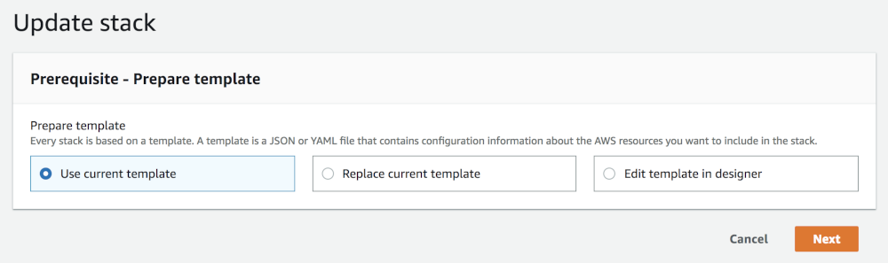

Operating Starburst Enterprise in AWS #
Congratulations! Your cluster is up and running. Now it is time to test it out by connecting your clients like the CLI or a BI application using the JDBC driver.
With that usage you gain insights on the correct configuration, data sources, and sizing of the cluster for the desired usage and performance. This, in turn, leads you to make additional changes, such as updating configuration, scaling your cluster or upgrading to a newer release.
This document covers these operations and other aspects associated to running your Starburst Enterprise platform (SEP) cluster, or even clusters.
Querying SEP #
Any query has to be submitted to the coordinator for processing on the cluster. Typically you need the following parameters to connect:
- coordinator host name such as
starburst.example.com, or IP address - protocol HTTP, defaults to port 80, or HTTPS, defaults to port 443
- port, if non-default port is configured and exposed, commonly 8080 or 8443
- username
- password
Locate the IP address, protocol, and port of your coordinator, for your connection string, with following the steps:
- Navigate to the CloudFormation console under Management Tools within the Services menu.
- Select your Stack Name and click the associated tab labeled Outputs.
- Note the value for the StarburstCoordinatorURL.
- Using the URL within the VPC, exposes the Starburst Enterprise UI.
Now you can use any client or driver supported by SEP to connect and query.
Example: Trino CLI #
You can use the Trino CLI from your local workstation:
-
Install the CLI.
-
Use the parameters determined in the preceding section.
-
Run the CLI with URL and username supplied and activate the password dialog:
$ trino --server https://starburst.example.com --user admin --password
- Once connected you can check for available catalogs with
SHOW CATALOGS, or run any other query.
Manually scaling a running SEP cluster #
Using the CloudFormation template, you can scale your cluster up and down to match demand. Alternatively you can use auto_scaling.
Add or remove workers using the AWS CloudFormation console #
1. CloudFormation console Navigate to the CloudFormation Console under “Management Tools” within the Services menu.
2. Choose a stack Select the SEP cluster (CloudFormation stack) you wish to alter.
3. Actions menu Navigate to the Actions drop-down menu and click Update Stack”**.
4. Select template Once you have arrived at the Select Template page within your stack update, you can find a pre-populated field under “Amazon S3 template URL”. Click Next. Note, selecting “Use current template” achieves the same result.

5. Specify details Within the Specify Details page navigate to the “Workers Count” field and increase and decrease the node count to meet your needs.
6. Review and update Navigate through to the Review page and look over your changes. When these are correct, click Update to conclude the up-scale/down-scale of your cluster.
Add and remove an instance using the AWS CLI #
1. Open a terminal window Open a terminal window to begin a command line.
2. Update stack Use the update stack command to initiate the update of your cluster (CloudFormation stack).
$ aws cloudformation update-stack
3. Choose a stack Specify the name or unique stack ID of the cluster to update.
--stack-name (string)
4. Select template Indicate the template you used to create your cluster.
Set Previous: Reuse the existing template that is associated with the cluster that you are updating. Set UsePreviousTemplate to true.
--use-previous-template
5. Add or remove instances
Specify a new value for the WorkersCount parameter and indicate to the AWS CLI
that you do not want to change value of any other parameters.
ParameterKey=WorkersCount,ParameterValue= 1
Reference the Example section below for a complete example of what to enter into the CLI.
6. Review and update Finally, review the details of your cluster and your commands. When these are correct, proceed by pressing enter to finish updating your cluster.
See the following update-stack command as a reference for your cluster
update:
$ aws cloudformation update-stack \
--stack-name teststack \
--use-previous-template \
--parameters \
"ParameterKey=VPC,UsePreviousValue=true" \
"ParameterKey=Subnet,UsePreviousValue=true" \
"ParameterKey=SecurityGroups,UsePreviousValue=true" \
"ParameterKey=CoordinatorInstanceType,UsePreviousValue=true"\
"ParameterKey=WorkersInstanceType,UsePreviousValue=true" \
"ParameterKey=KeyName,UsePreviousValue=true" \
"ParameterKey=IamInstanceProfile,UsePreviousValue=true" \
"ParameterKey=WorkersCount,ParameterValue=3" \
"ParameterKey=LaunchSuperset,UsePreviousValue=true" \
"ParameterKey=MetastoreType,UsePreviousValue=true" \
"ParameterKey=ExternalMetastoreHost,UsePreviousValue=true" \
"ParameterKey=ExternalMetastorePort,UsePreviousValue=true" \
"ParameterKey=ExternalRdbmsMetastoreUserName,UsePreviousValue=true" \
"ParameterKey=ExternalRdbmsMetastorePassword,UsePreviousValue=true" \
"ParameterKey=ExternalRdbmsMetastoreDatabaseName,UsePreviousValue=true" \
"ParameterKey=AdditionalCoordinatorConfigurationURI,UsePreviousValue=true" \
"ParameterKey=AdditionalWorkersConfigurationURI,UsePreviousValue=true" \
"ParameterKey=BootstrapScriptURI,UsePreviousValue=true"
The above command yields output like the following:
{
"StackId":"arn:aws:cloudformation:us-east-1:123456789012:stack/myteststack/466df9e0-0dff-08e3-8e2f-5088487c4896"
}
Auto scaling #
AWS Auto Scaling offers automatic control over the size of your SEP cluster (CloudFormation stack).
Manage auto scaling groups #
When you create a cluster, an auto scaling group (ASG) is automatically created for all the workers. To view and manage this ASG, refer to the AWS ASG page and log into your AWS account. There, you see a list of ASGs for all workers across all clusters you have running. Here, you can control how Amazon Auto Scaling manages your cluster.
Auto scaling models #
There are three types of auto scaling models you can employ to manage your cluster:
- Static/Manual
- Static/Scheduled
- Dynamic
Static or manual auto scaling
The static or manual auto scaling model is managed from the “Details” tab. This model is configured by default. In this tab, there are three main properties: “Desired Capacity”, “Min” and “Max”. Click on the “Edit” button to change those values to your desired values and when you hit “Save” the auto scaling mechanism starts to satisfy your requirements – either spinning up new workers or shutting down existing ones.
In the CloudFormation template, by default, all three properties are set to the same value. As a result the number of workers remains constant. When a worker is terminated (or is unavailable for whatever reason), auto scaling starts a new one to satisfy the requirements.
Static or scheduled auto scaling
The static or scheduled auto scaling model is controlled from the “Scheduled Actions” tab. There, you can create a number of scheduled actions that allow you to change the size of the cluster based on the time of day. For example, you can keep a small number of nodes during the night, and boost it during different parts of the day.
The configuration of this model is a simple list of actions that are scheduled to execute and change the static values of “Min”, “Max” and “Desired Capacity” properties to some other arbitrary (static) values of your choosing. Such an action is executed with the configured schedule, either once or in a repetitive manner (cron). Continuing on the previous example, you can configure a nightly cooldown – one event to handle lowering the values in the evening and another event every morning to bring them back up.
Dynamic auto scaling
Dynamic auto scaling uses policies which you define in the in the “Scaling Policies” tab. Of the three types of policies, “scaling policy with steps” and “target tracking scaling policy” (default policy), are the most useful. The third is a special case of the “with steps” policy that contains a single step. You can change the policy type by clicking a link at the bottom of the “Scaling Policies” tab.
-
Dynamic target tracking:
With the dynamic target tracking policy you: (1) choose a relevant metric (eg., avg CPU utilization) and state the target value; and (2) indicate the time buffer to wait before reassessing the metric to let the new nodes start up and start contributing to the metric value. Additionally, you can disable scale-in to have the mechanism be able to only increase the worker count, not shrink the cluster.
-
Dynamic “with steps”:
The dynamic “with steps” policy is more complex, as it consists of an alarm and a number of adjustments. To define an alarm, you must choose a metric and define its breach criteria (eg., avg CPU utilization over a chosen period of time higher than 70%). Additionally, the alarm can optionally send an event to an SNS topic for other systems to observe. Once the alarm is breached, a set of adjustments to the number of nodes are executed. Those adjustments can be either arbitrary (setting the number of nodes to a specific value) or increments. The increments can be a value (eg., add 2 nodes, or remove 1 node) or a percentage of the current number of workers (eg., add 10%, or reduce by 20%).
Auto scaling activity #
All events in the auto scaling mechanism can be observed in the Activity History tab. This is very useful for debugging purposes. The current instances part of the ASG are listed in the “Instances” tab. There you can observe which instances are currently being started-up or decommissioned.
Manual #
Auto scaling can also be used for clusters built manually using the Starburst AMIs and not using the CloudFormation stack. The workers need to be manually put into a single ASG, and configured as described above. Graceful scaledown of workers, as described in the graceful scaledown section of this document, does not work for manually setup auto scaling groups.
Graceful scaledown of workers #
When a CloudFormation stack is created using the CloudFormation template all the workers are automatically organized within an AWS ASG.
When AWS auto scaling resizes the cluster it starts decommissioning workers. The CloudFormation stack has features to make sure this process doesn’t disrupt the usage of the cluster, most importantly that no queries fail because of that.
Without this feature if a worker is forcefully shut down, all queries currently running fail and need to be restarted.
How it works #
With graceful scaledown, when the ASG stack is modified to shrink the cluster (number of workers lowered, or the auto scaling group is configured to do so automatically) then AWS auto scaling notifies the workers it intends to shut down and let them prepare for this.
The worker enters a special state in which it (1) stops serving new requests, (2) continues processing the current query tasks that are scheduled on it and (3) shuts down after finishing that work. Next after a 2 minute quiet period the worker process automatically exits, and notifies the auto scaling mechanism to proceed with the termination of its EC2 node.
The maximum time a worker can postpone AWS auto scaling termination of its node is 48hrs, this is a AWS limitation.
AWS elements on the stack #
The CloudFormation Template creates a number of resources on the stack:
- an Auto Scaling Hook
- an SQS Queue that this hook writes to
- an IAM Role and an InstanceProfile wrapper to allow auto scaling to write to SQS
- an IAM Role to allow the workers to talk to SQS, Auto scaling and EC2 services. The role is fine grained to allow only the necessary actions. It is discussed in a section below.
All the resources created on the stack are explicit, and you can find them and view their settings/permissions. All resources are terminated once the stack is deleted.
SEP node role permissions #
The node role is created automatically by the CloudFormation template on the stack (and deleted when the stack is deleted).
When using Starburst via our CloudFormation template, by default, you do not need to provide anything. The template creates all necessary resources automatically.
If you need to provide your own IAM Instance Profile for the SEP
instances (IamInstanceProfile field in the Stack creation form), consult the
IAM role permissions for cluster
nodes
section. Same applies when launching the AMI manually. Make sure you choose an
IAM Role that satisfies the requirements.
Graceful scaledown limitations #
SEP instances created manually from the AWS Marketplace AMIs and manually setup in an ASG do not benefit from this mechanism without manual setup. They are operating without graceful scaledown, so when auto scaling kicks in, all queries that are currently running may fail. In that case, at boot time a warning log is recorded in the graceful scaledown handler log saying it’s not running - this is intended behavior.
Coordinator high availability #
SEP offers the ability to enable high availability (HA) of the coordinator. In the event the coordinator becomes unavailable, the cluster automatically switches over to a new coordinator and continues to accept new queries.
Configuring HA #
Coordinator high availability (HA) is only supported via the Starburst
CloudFormation template in AWS. In order to fully utilize this capability set
the HACoordinatorsCount field of the Stack creation form (EC2
Configuration section) to a value greater than 1. Setting it to 2 or
3 should suffice most scenarios.
HA is ALWAYS enabled. However, when HACoordinatorsCount is set to 1 there is
no hot standby. In that case SEP eventually creates a new
coordinator. This may take several minutes. If HACoordinatorsCount equals 2
or more, then there are hot standby coordinators and the fail-over switch is
faster.
KeepCoordinatorNode CFT parameter to yes.Coordinator IP address #
The Coordinator is accessible via attached Elastic Network Interface (ENI) which
has a static auto-assigned private IP address. After you launch the Starburst
CloudFormation cluster stack, note the StarburstCoordinatorURL and
StarburstSSH keys in the stack’s Outputs section/tab in the AWS
CloudFormation console.
StarburstCoordinatorURL is the Starburst Enterprise Web UI and REST API
endpoint address, which you use to point your Trino CLI or
JDBC/ODBC drivers or access the Web UI from your browser. StarburstSSH notes
the SSH connection details to manually log onto the current coordinator.
Failover scenarios #
In general, in the event of a failure of the current coordinator, the HA mechanism kicks in and performs the following steps:
- Terminate the old/failed coordinator EC2 instance.
- Attach Elastic Network Interface to the new coordinator.
- Launch a new stand-by coordinator (within a couple minutes).
The core failover process (steps 1 and 2) should complete in under a minute, from the time when the coordinator started failing to respond. It is a matter of seconds once the coordinator is identified to be in a failed state, but there is some built-in time buffer so that we don’t act on a false alarm. When Elastic Network Interface is attached to the new coordinator, it is almost immediately available to clients.
In practice, a coordinator may “die” in one of the following scenarios:
- The node becomes unresponsive (e.g. hardware issues, OS level and network issues).
- The node disappears, might be terminated by some account admin or by AWS.
- The SEP process may exit because of an fatal error.
- The SEP process may become unresponsive, e.g. because of a long full garbage collection taking place.
In all those scenarios, after a short grace period, the failed coordinator is terminated if it still exists. Then a new coordinator is chosen among the hot standby instances and has coordinator ENI attached to it. Clients should re-issue the failed queries when the new coordinator becomes accessible. A new hot standby coordinator is launched in the background to take place of the one that has just been assigned.
HA considerations #
- When SEP is deployed in a custom setup (e.g. with a bootstrap script which sets up security) make sure the HTTP port (unsecured) is open and accessible from localhost. You may want to restrict access to it by binding it to localhost only or otherwise securing external access e.g. via the AWS Security Group assigned to the cluster. See the HA with HTTPS enabled section of this document for more information.
- Coordinator ENI has private IP address which is accessible only within the same VPC as the cluster stack. This means in order to connect to the coordinator you need to initiate the connection from a client either on EC2 machine deployed in the same VPC or connected to the VPC via a VPN.
- Note that all queries, that were running when the coordinator failed, fail to complete. You need to restart these queries on the new coordinator. Similarly the SSH connections to the old coordinator needs to be re-established after the fail-over.
- When connecting via SSH, depending on your SSH configuration you may see
login issues like
REMOTE HOST IDENTIFICATION HAS CHANGEDetc, due to the fact that the underlying host has changed, and the key’s fingerprint that was previously accepted has changed. You may want to not verify the host keys at all, by adding-o StrictHostKeyChecking=noto the SSH command or deleting the key from yourknown_hostsfile and accepting the new one.
HA with HTTPS enabled #
The coordinator’s health is checked by polling SEP locally via HTTP. This is why you need to have the coordinator’s HTTP port open even if you configured SEP to use HTTPS, regardless how many coordinators are configured (even if only one). Workers do not need to have their HTTP port open, although we recommend using HTTP for internal cluster communication (unless HTTPS is explicitly required for internal communication as well). Note that using HTTPS for internal communication may have substantial impact on overall cluster performance, because all intermediate data needs to be encrypted and decrypted. The overhead of HTTPS depends on the amount of data sent over network and actual ciphers being used.
Example SEP config.properties fragment:
http-server.http.enabled=true
http-server.https.enabled=true
Additionally you should block non-local HTTP access to the coordinator by configuring the AWS Security Group assigned to the cluster accordingly.
Is the information on this page helpful?
Yes
No
- Operating Starburst Enterprise in AWS
Is the information on this page helpful?
Yes
No